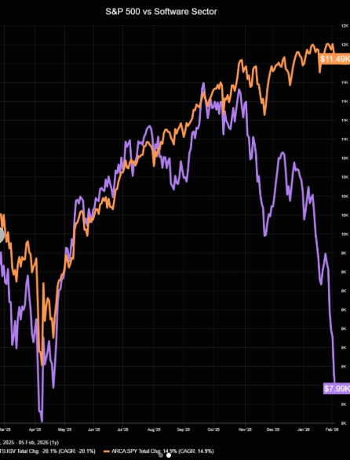
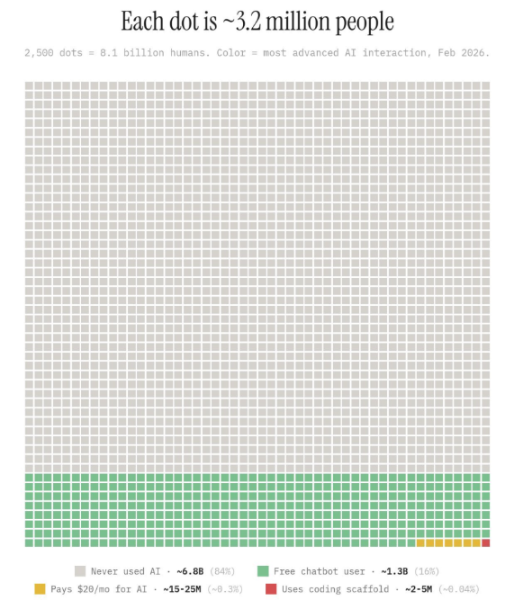
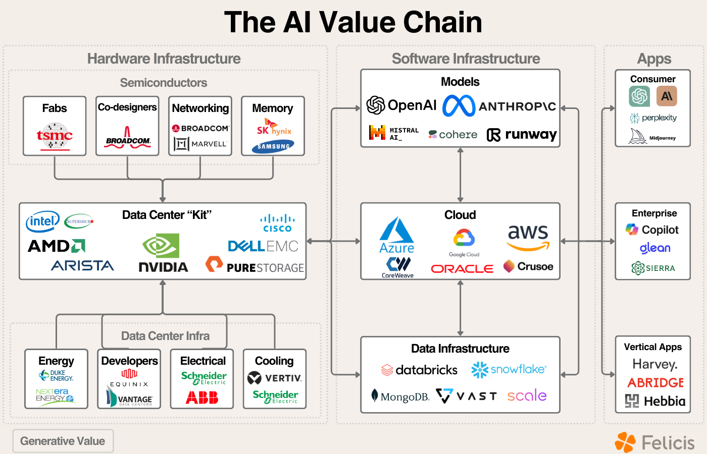

AI Agent 시대와 반도체
S/W개발팀 SE · 김학민 · 2026. 4
지난 1년, 챗봇에서 에이전트로
단순 질의응답을 넘어, 스스로 실행하는 AI — 코딩뿐 아니라 모든 지식노동에 해당
SECTION 01
SaaSpocalypse — SaaS(구독형 소프트웨어) + Apocalypse

S&P 500 vs Software Sector(IGV) 디커플링 — 2025.10 고점 대비
하루 시총 큰 폭 하락
AI 자동화가 좌석 라이선스 모델에 가하는 압력 가시화
더 많은 직원 = 더 많은 라이선스 가설에 물음표
AI Agent가 사람이 직접 쓰고 판단을 내리는 도구가 되자, 중간 소프트웨어가 흔들린다
제한된 기능
(피처폰)
2024 이전
무한한 확장성
(스마트폰)
2025–2026
1년 사이 모델 성능이 크게 달라져서, 예전 경험 기준으로는 현재 상황을 가늠하기 어려운 구간
개발 밖에서도 수치로 드러나는 전환
보고서·기획서·제안서
시장 분석·경쟁사 분석
번역·요약·정리
"자연어가 새로운 프로그래밍 언어가 되고 있고, 더 많은 사람이 기계와 직접 대화한다"— Jensen Huang, NVIDIA CEO
자연어가 곧 명령어 — 누구나 컴퓨터를 부리는 시대
SECTION 02
지금 어디까지 와 있는가

수억 명 · ChatGPT · Copilot · Gemini
극소수 · 챗봇과 에이전트는 다른 경험
아직 매우 소수
AI를 들어본 사람은 많아도, 에이전트를 직접 써본 사람은 거의 없다
초기 도입이 아닌 보편화 단계의 숫자들
2년 만에 자동완성에서 멀티에이전트까지
개발 분야에서 2년간 일어난 일이
모든 직군에서 반복된다
SECTION 03
챗봇과 에이전트는 구조가 다르다
챗봇과 에이전트의 주요 차이
1번 누르세요, 2번 누르세요
정해진 메뉴 바깥은 불가
매번 처음부터 다시 설명
맥락을 이해하고 알아서 조사
판단 · 실행 · 중간 보고
피드백 반영 · 후속 조치까지
기본 챗봇 경험과 에이전트 경험은 구조적으로 다른 체험 — 한쪽으로 다른 쪽을 가늠하기 어렵다
“시장 분석 보고서 만들어줘” — 같은 지시에 숫자로 드러나는 차이
| 챗봇 | 에이전트 | |
|---|---|---|
| 출력물 규모 | 1–2페이지 텍스트 | 보고서 + 슬라이드 + 데이터 |
| 소요 시간 | 1–3분 | 30분–수 시간 (자율) |
| 사람 개입 | 매 응답 후 재질문 | 시작 · 종료 · 중간 확인 |
| 도구 접근 | 대화창만 | 웹 · 파일 · 코드 실행 |
대화의 도구에서 일을 대신하는 도구로 — 규모 · 시간 · 도구 접근성이 모두 달라진다
같은 모델이라도 어떤 에이전트 위에서 구동하느냐에 따라 결과가 달라진다
성능 = Model × Agent × 나(Pilot)
AI의 추론 능력
Claude, GPT, Gemini
도구 사용·실행 능력
Claude Code, Codex
판단·지시 능력
도메인 지식, 프롬프트
셋 중 하나라도 0이면 결과도 0 — 사용하는 사람이 핵심
비서 1명에서 전문가 팀으로 확장
Solo · Sequential
순차 처리
시장조사
보고서
팩트체크
프레젠테이션
한 명이 순서대로 처리하던 일을 팀이 동시에 — 개인 작업에서 조직 작업으로
에이전트는 지시 → 실행 → 결과 구조
사람이 매 단계 개입하지 않는다
코딩 에이전트가 아니라, 파일을 열고 수정하고 실행하는 자율 에이전트
프로그램 · 웹사이트
자동 생성
작성한 코드를
직접 실행 · 검증
보고서 · 발표자료
구조화 · 작성
데이터 수집
인사이트 도출
코딩뿐 아니라 문서 · 분석 · 발표자료 같은 디지털 산출물 전반에 적용
Excel 자동화
자연어 지시 → AI가 설계 · 구현 · 배포까지 자율 실행
SECTION 04
동시다발적 확산
기존 지식의 정리를 넘어 — 새로운 지식을 창출하는 단계
수백 개 소스를
10분에 분석
자동 수집
비교·시각화
데이터 →
슬라이드 자동
VOC 분석
트렌드 탐지
반복적 고민은 AI에게 — 판단과 결정에 집중
XML 기반
마크업 문법
PostScript 기반
구조화된 문법
HTML/Wiki
마크업 코드
셀 · 수식
데이터 구조
에이전트의 실행 상당수가 코드 생성·실행 경로 — 디지털 업무 전반에 확장 가능한 이유
코딩을 배울 필요는 없지만, 프로그래머적 사고 — 문제 분해 · 구조화 · 명확한 지시 — 는 누구에게나 필요
PPTX는 XML 묶음, PDF는 PostScript 명령어 — 모두 사람도 에이전트도 읽고 쓸 수 있는 구조
<!-- 제목 도형 --> <p:sp> <p:txBody> <a:p> <a:r> <a:rPr b="1" sz="2800"/> <a:t>AI 에이전트</a:t> </a:r> </a:p> </p:txBody> </p:sp>
%% 텍스트 블록 시작 BT /F1 24 Tf % 폰트·크기 72 720 Td % 좌표 이동 (AI Agent) Tj % 문자열 출력 ET %% 텍스트 블록 끝
텍스트 기반이라 에이전트가 직접 생성·수정·검증 가능 — 이것이 문서 자동화의 출발점
사람의 판단 + AI 실행력 결합
문서 작성·정리는 가장 시간이 많이 드는 업무 — 템플릿화·반복 가능한 공정으로 전환
AI 워크로드의 공통 분모
텍스트 · 영상 · 코드 · 과학 — 인프라 관점에서 보면 수렴점이 존재
SECTION 05
에이전트 확산이 어디에 압력을 만드는가

출처: Machine Learning Made Simple — Investor's Analysis of the Gen AI Market
반도체 · 데이터센터 · 클라우드 · 모델 · 애플리케이션 — 이 중 어디에 먼저 압력이 쌓이는지가 핵심
GPU 위에 직접 적층, AI 연산 속도의 최대 병목
CPU 시스템 메모리, 에이전트 세션 · KV-cache 오프로드
학습 데이터 · 모델 저장, 에이전트 파일 I/O 경유
레거시 서버 · 산업용, HBM 확대로 공급 감소 → 동반 상승
훈련 · 추론 · 영상 · 월드모델 — 수요 패턴이 메모리 쪽으로 수렴하는 양상
텍스트 LLM보다 추론·영상·월드모델 쪽이 훨씬 빠르게 자원을 소모 — 로직 칩보다 HBM 공급 측 여유가 출고량에 더 크게 영향
에이전트가 늘어날수록 — 추론 연산 × 저장 수요 = 메모리 수요
더 큰 모델
더 많은 데이터
PB급 스토리지
24/7 에이전트
멀티에이전트
메모리 상시화
영상·3D·코드
생성물 폭발
EB급 스토리지
로봇·차량·폰
온디바이스 AI
고용량 저장
훈련 · 추론 · 저장 · 엣지 — 네 갈래에서 동시에 수요가 올라오는 구조
과잉투자는 비용의 문제, 과소투자는 존재의 문제
향후 10–15년 AI 플랫폼 재편 국면에서 포지션을 놓칠 가능성
— 빅테크 CEO 공개 발언 종합
과소투자 리스크가
과잉투자보다 극적으로 크다
— Sundar Pichai, Alphabet CEO
수요 > 공급, 긴 리드타임
지금 안 깔면 따라잡을 수 없음
— AI 클라우드 점유율 게이트
빅테크 CEO들의 공개 발언에서 공통으로 확인되는 틀
"이 경쟁에서 지느니 파산하는 게 낫다"— Larry Page, Alphabet 공동 창업자 (언론 보도 정리)
AI 레이스의 투자 사이즈를 이해하는 또 하나의 앵커
SECTION 06
구현에서 설계 · 판단으로
"코드 작성은 점점 값싼 상품이 되고 있고, 정말로 중요한 것은 어떤 질문을 할 수 있느냐"— Jensen Huang, NVIDIA CEO
기획 : 실행
1 : 7
기획 : 실행
2 : 1
실행 시간이 3주 → 1일로 압축 — 기획과 판단의 비중이 더 커진다
10명 · 1년
jQuery → Vue · SDS 6명 별도 계약
2명 · 4주
백엔드 전면 업그레이드 · 10만 Line+
AI가 실행을 맡으면서 — 더 적은 자원 · 더 짧은 시간으로 더 복잡한 작업
범용적이지만
깊이 부족
깊지만
속도 제한
깊이 + 속도
= 차별화된 결과물
도메인 경험과 AI가 결합될 때 차별화된 관점이 만들어진다
AI가 빨라질수록, 판단할 일이 사람에게 몰린다
효과 가속
문제 악화
AI는 마법이 아닌 증폭기 — 기반이 좋으면 가속, 아니면 혼란도 가속
존재하지 않는 데이터를
자신 있게 생성
보고서에 가짜 출처
틀린 수치가 포함될 수 있음
AI 산출물은 반드시
사람이 검증
AI가 만든 것을 그대로 쓰는 것이 아니라 검증하고 판단하는 것이 핵심
AI가 처리하는 영역이 넓어질수록 — 남는 영역의 밀도가 높아진다
AI를 잘 다루는 소수에게 보상이 집중되며 나머지에게 압박이 확산되는 구조 — 아래 연쇄로 현상화된다
AI 토큰뿐 아니라 바이오 토큰도 유한 — 관리가 곧 지속가능성
도구가 빨라져도 사람까지 빨라질 필요는 없다
SECTION 07
기술 가능성과 우리 환경의 적용 가능성은 별개의 문제
| 기술적으로 | 우리 환경에서 | 예시 | 대응 | |
|---|---|---|---|---|
| 01 | 가능 | 적용 가능 | 외부 AI로 시장 분석 · 보고서 초안 · 번역 | 즉시 시작 |
| 02 | 가능 | 제약 존재 | 사내 데이터 분석 · 내부 시스템 연동 | 제약 해소 추진 |
| 03 | 불가 | 해당 없음 | 100% 자율 의사결정 | 기술 성숙 관찰 |
즉시는 오늘부터 가능 · 준비는 논의의 여지 · 관찰은 기술 성숙도를 지켜보는 영역
DS부문 차원의
AI 도구 적극 활용 방침
공통 인프라 조직과
메모리사업부 SW조직
외부 AI 도구 활용
개발 효율화 PoC 진행
제약 속에서도 S/W 개발팀은 이미 움직이는 중
내 업무 중 AI에게 맡길 수 있는 것은?
AI와 어떻게 역할을 나눌 것인가?
우리는 무엇을 준비해야 하는가?
AI 활용 경험을 어떻게 나눌 것인가?
각 툴마다 무료 체험 또는 유료 구독이 필요 — 환경에 맞게 선별 체험
AI는 배우는 게 아니라, 쓰는 것
방법은 써본 뒤부터 바뀐다
개인 숙련 → 조직 학습의 3단계
“이건 되더라”
“저건 안 되더라”
잘 되는 프롬프트
유용한 도구 공유
AI 활용이
자연스러운 조직
개인 단위 숙련보다 조직 단위 확산의 효과가 누적적으로 커진다
질의 · 토론
AI가 바꾸는 일하는 방법 · 2026. 4 · 김학민